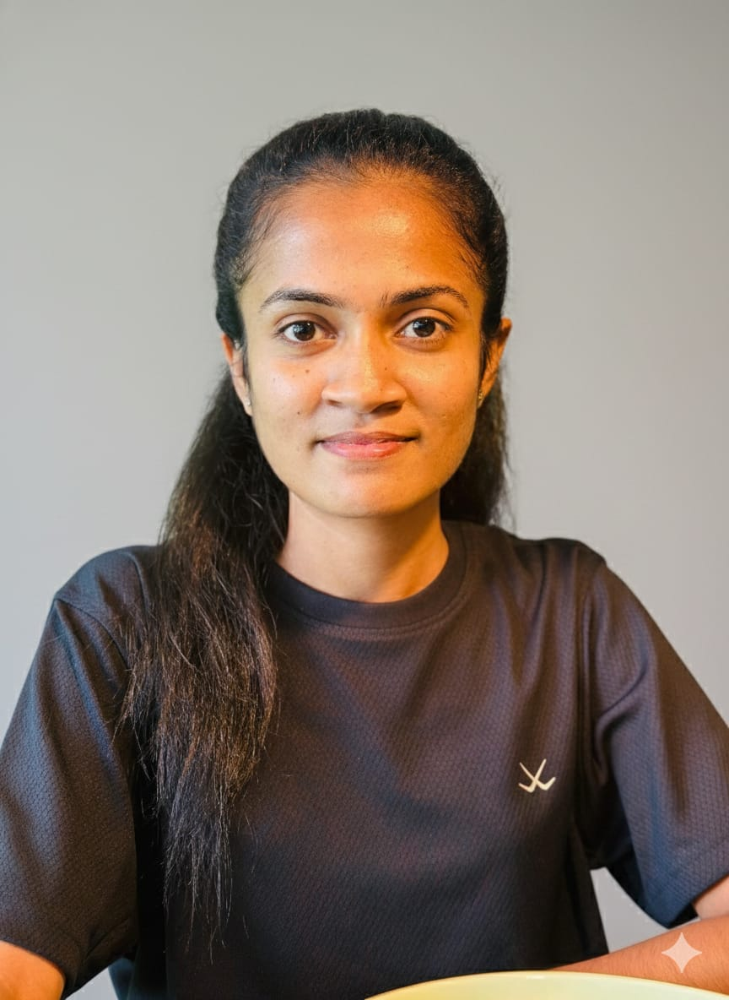
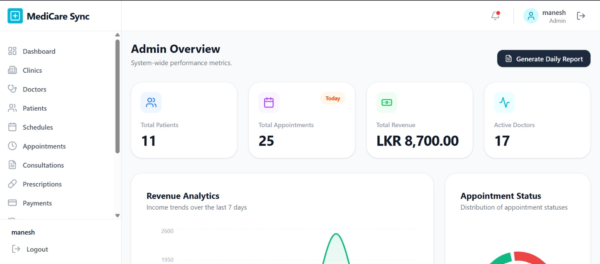
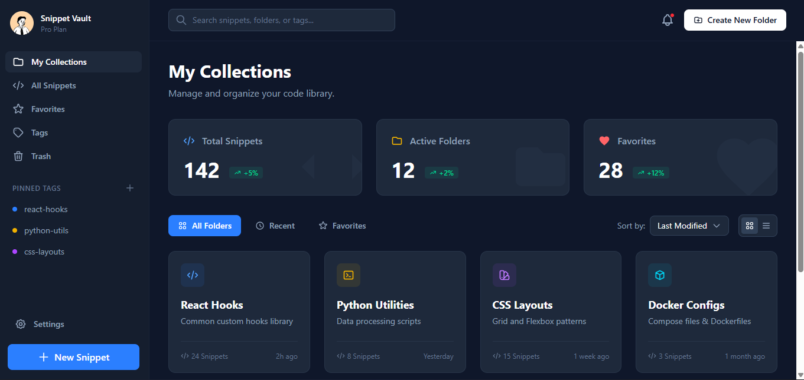

BIT undergraduate passionate about building scalable full-stack web applications using Spring Boot and Angular - with a strong focus on clean architecture and real-world impact.
Projects
Technologies
Years Learning
I am a BIT undergraduate with strong backend expertise in Spring Boot and REST API development. I focus on writing clean, maintainable code and building professional-grade full-stack systems. My goal is to grow as a software engineer while solving real-world problems.


Responsive full-stack Disaster Management System with React and Firebase. Features emergency reporting with automatic GPS location capture, offline data sync, and a real-time admin dashboard.
Working as Software Engineer in a 7-member team to develop a Construction Management SaaS. Responsible for implementing backend REST APIs, developing frontend components, and integrating database functionality.
I'm always open to new opportunities and collaborations.
nethmiasinsala87@gmail.com